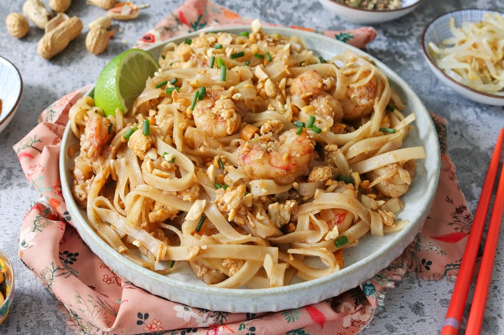

Gastronomía de Tailandia
RECETA DEL MES TAI
Sopa Tom Kha Kai
Preparación
Ingredientes para cuatro personas
1 trozo de galangal de 1 cm
2 tallos de citronela, hierba limón o limoncillo
2 o 3 dientes de ajo
2 dientes de ajo
De 1 a 3 chiles tailandeses (rojos y verdes)
4 o 5 hojas de lima kafir o combava
1 ramillete de cilantro fresco
1 cebolla mediana
500 g de contramuslo de pollo deshuesado y sin piel
250 g de champiñones o setas (Ostra, Shitake… )
600 ml de caldo de pollo
400 ml de leche de coco
1 cucharadita de sal
1 cucharadita de azúcar de palma o azúcar corriente
2 cucharadas de salsa de pescado
1 lima
Unas gotas de aceite de chile (opcional, para servir)
La sopa Tom kha kai (o Tom kha gai) es uno de los platos más famosos de la cocina tailandesa. Su nombre quiere decir literalmente sopa de galangal y pollo,
que son sus ingredientes principales. Para su elaboración se utiliza leche de coco y un conjunto de aromáticos que confieren al plato una mezcla de sabores dulce, agrio y picante muy agradable.
Entre los citados aromáticos se utilizan ingredientes muy comunes en la gastronomía de Tailandia, pero que por estas tierras son, por lo general, un tanto desconocidos. En particular nos referimos al galangal (de aspecto similar al jengibre pero de sabor más cítrico), la citronela (también conocida como hierba limón o limoncillo) y las hojas de limonero o lima kafir o combava (una variedad de lima pequeña y arrugada).
No obstante, que la rareza de los productos no te impida probar esta delicia de sopa. Tal es su popularidad, que cualquier supermercado asiático (físico o en línea) con sección de cocina tailandesa los va a tener disponibles casi seguro, si no es en su forma fresca los encontrarás congelados o en forma de pasta pasta cocinar. Incluso, para quienes quieran probar de manera esporádica, venden también pequeños packs con la cantidad justa de cada ingrediente.
Como hacer la sopa Tom Kha Kai
Seguimos con el pollo, del cual vamos a necesitar unos 500 g de contramuslos deshuesados y sin piel que cortaremos en trozos del tamaño de un bocado. Por último, nos haremos con unos 250 g de champiñones o setas, que pueden ser del tipo que más nos guste aunque es bastante común usar las de variedad ostra o las shiitake. Las cortamos también en trozos.
Con todo listo, nos ponemos con la preparación de la sopa que básicamente consiste en ir agregando a la olla los ingredientes por turnos. Comenzamos por juntar 600 ml de caldo de pollo con 400 ml de leche de coco y lo ponemos a calentar.
Como hacer los Maki
Audio Tailandia
Pad Thai

Pad thai (o phad thai, tailandés: ผัดไทย) es uno de los platos más conocidos de la cocina tailandesa. Se trata de un plato salteado en wok salteado, y a base de fideos de Arroz con huevo, salsa de pescado, pasta de tamarindo, y cualquier combinación de brotes de soja, camarones, pollo decorado con cacahuates picados igual que tostados y cilantro, algunos expertos coreanos utilizan dos tipos de salsa de soja. Se sirve habitualmente con una rodaja de limón y el jugo de esta fruta se añade al plato como condimento.
Tom yum goong
Tom yum se trata de una sopa originaria de Tailandia y se puede decir que es uno de los platos más conocidos de la cocina tailandesa.